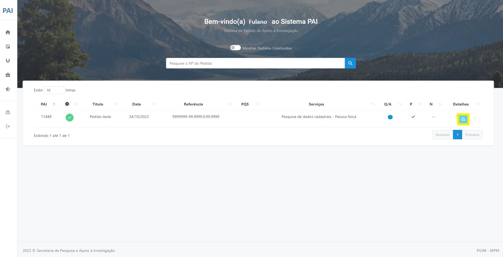
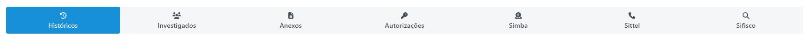
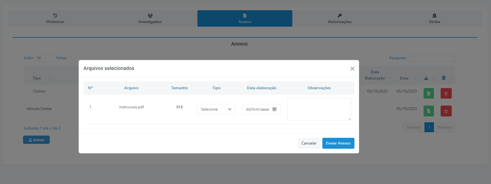
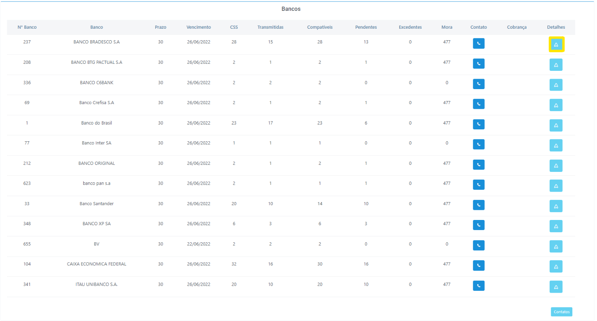
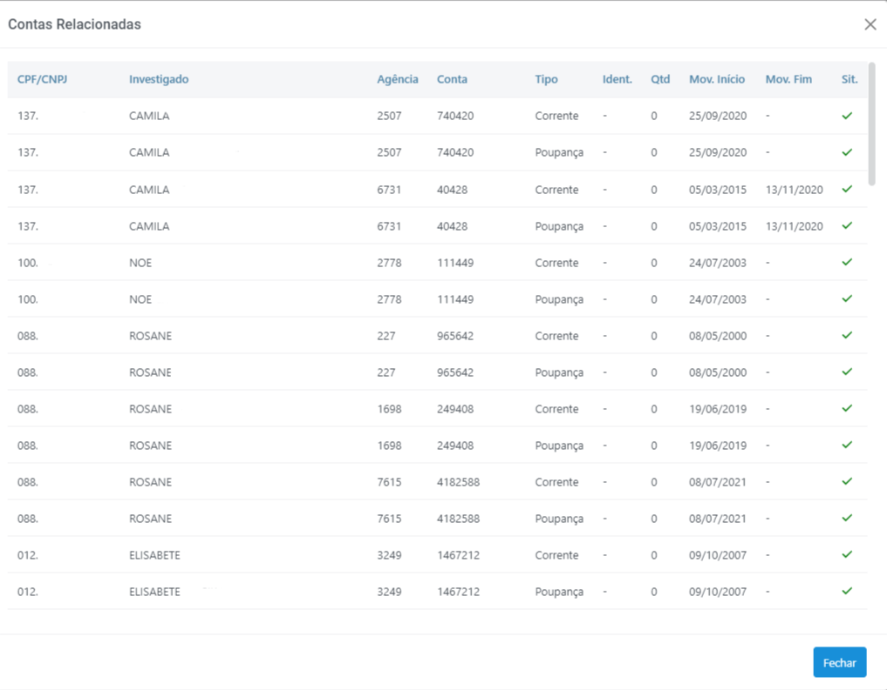
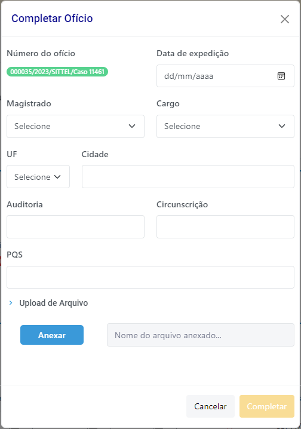
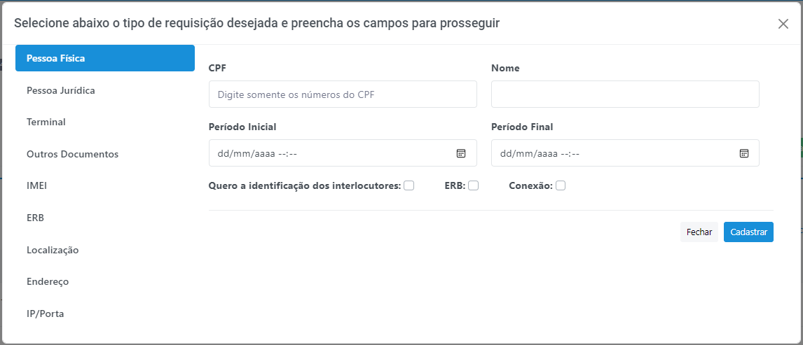
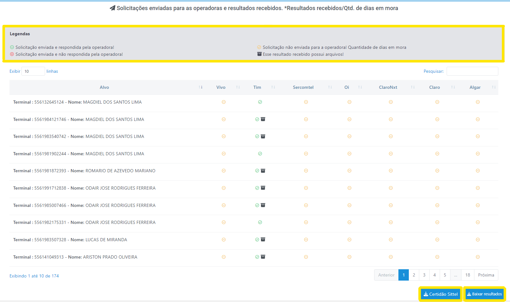
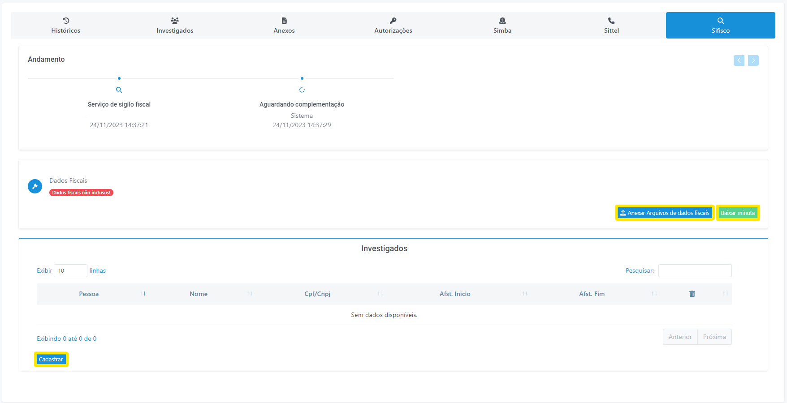

Meus pedidos
Permite que o membro visualize todos os pedidos feitos até a data corrente. Inicialmente são mostrados apenas os pedidos em andamento, mas, caso o membro queira enxergar todos os pedidos já cadastrados, basta acionar o botão “Mostrar Pedidos Concluídos”, localizado no centro da página (Figura 17).
Detalhes do pedido
Para navegar pelos detalhes do pedido, clique no botão apresentado na tela, conforme mostrado na figura a seguir: (Figura 17)

Figura 17 - Acessar os detalhes dos pedidos.
Ações em detalhes do pedido

Figura 18 - Ações em detalhes do pedido.
- Encerrar: Encerre um pedido clicando no botão em vermelho “Encerrar”. Descreva a motivação que justifique o encerramento do pedido e confirme.
- Editar pedido: Edite um pedido clicando no botão em amarelo “Editar pedido”. Descreva a motivação para a edição e em seguida realize as alterações necessárias. Por fim, clique em “Salvar”.
- Certidão: Obtenha a certidão do pedido clicando no botão em azul “Certidão”. Através deste documento o demandante reporta ao juiz qual é o status atual do pedido.
É recomendável que de tempos em tempos o membro verifique se há algum pedido feito à SPAI que já pode ser encerrado. Por exemplo, quando ainda não foi atendido, mas já houve a solução da lide, ou quando o caso foi arquivado ou ainda quando o juiz indeferiu um pedido de afastamento de sigilo.
Abas do pedido

Figura 19 - Modal "Abas do pedido".
Histórico
Permite que os demandantes e os integrantes da SPAI acompanhem todas as alterações ocorridas no pedido e nos serviços requeridos, realizadas pelos membros ou por servidores da própria SPAI. Além disso, possibilita ao membro a inclusão de informações a qualquer tempo que julgue importante para o andamento do pedido e dos serviços requisitados. Ao cadastrar um novo histórico, por serviço requerido, a área responsável da SPAI será automaticamente notificada por e-mail sobre a inclusão de um novo registro de histórico. No entanto, nos casos em que já houve a conclusão ou o encerramento do pedido, o pedido deverá ser previamente reaberto.
Investigados
Permite visualizar, editar e excluir os investigados cadastrados no pedido e possibilita o cadastramento de novos investigados, tanto de “pessoa física” quanto de “pessoa jurídica”.
Anexos
Permite anexar arquivos no sistema. Funciona de maneira similar ao recurso “Anexar Arquivo’ da maioria das ferramentas de e-mail. O sistema suporta anexos de arquivos de até 25MB.
Após clicar no botão “Anexar” irá aparecer uma janela pop-up (Figura 20) na qual será possível localizar o arquivo em seu computador. Selecione o tipo de anexo (preenchimento obrigatório), a data de elaboração e insira uma observação (preenchimento não obrigatório) para o documento. Por fim, clique em “Enviar anexos”.

Figura 20 - Menu anexos
Autorizações
Autorizações: utilizado para que o membro titular do pedido possa autorizar outros usuários a visualizarem um pedido.
Dentro da aba “Autorizações”, em “Pesquise o Usuário”, digite o nome do membro ao qual você deseja conceder acesso ao pedido. Em seguida, clique no botão para confirmar a operação (Figura 21).
 Figura 21 - Menu autorizações.
Figura 21 - Menu autorizações.
SIMBA
Sistema de Investigação de Movimentações Bancárias.
Permite anexar "Extensão de Quebra", baixar minuta, visualizar a relação de investigados e a situação de suas respectivas contas em relação às transmissões. Também é possível verificar as contas bancárias, na tabela "Bancos" e os "Relatórios e atendimentos recebidos."
Bancos (Figura 22):

Figura 22 - Menu anexos.
A partir dessa janela, clicando em "Detalhes" poderão ser obtidas outras informações a respeito das transmissões como, por exemplo, dados do investigado, números de contas, agências e bancos, nível de identificação da origem e destino, períodos etc. (Figura 23)

Figura 23 - Aba "Contas Relacionadas".
As colunas da tabela contidas nessa janela possuem o seguinte significado:
- CPF/CNPJ: CPF ou CNPJ do investigado.
- Investigado: Nome do investigado.
- Agência: Número da agência bancária do investigado.
- Conta: Número da conta bancária do investigado.
- Tipo: Tipo da conta bancária (conta corrente, poupança, investimento etc.).
- Ident.: Percentual de identificação dos registros que compõem o extrato da conta transmitida. Algumas transações bancárias tais como TED, DOC e outras devem ser identificadas de modo a facilitar análises bancárias.
- Qtd: Quantidade de linhas que compõem o extrato da conta transmitida.
- Mov. Início: Data da primeira movimentação da conta.
- Mov. Fim: Data das últimas movimentações da conta.
- Sit.: A situação é representada através dos seguintes ícones:
- : Indica que a conta transmitida consta do CCS;
- : Indica que a conta consta do CCS, mas não foi transmitida;
- : Indica uma conta excedente, ou seja, não consta do CCS.
SITTEL
Sistema de Investigação de Registros Telefônico e Telemático.
Permite baixar minuta e complementar o ofício. Complemente o ofício (Figura 24) com os dados presentes na decisão judicial, seguindo as seguintes etapas:
- Data de expedição: Data de emissão do ofício.
- Magistrado: Nome do juiz assinante da decisão judicial.
- Cargo: Cargo do juiz assinante da decisão judicial.
- UF: Estado da auditoria militar respectiva.
- Cidade: Cidade da auditoria militar respectiva.
- Auditoria: Identificação da vara criminal.
- Circusncrição: Área de competência, atuação e autoridade do juiz.
- PQS: Número do pedido de quebra de sigilo.
- Upload de Arquivo: Campo para anexar a decisão judicial.

Figura 24 - Complementar Ofício.
Também é possível cadastrar alvos (Figura 25). Os tipos de requisição disponíveis são:
CGI: Imagens geradas por computador

Figura 25 - Cadastrar Alvo.
Por fim, na última tabela, é possível acompanhar o andamento da investigação dos alvos, baixar arquivo zip com os resultados recebidos e fazer download da "Certidão Sittel" (Figura 26).

Figura 26 - Status das solicitações enviadas para as operadoras.
SIFISCO
Sistema de Investigação Fiscal.
Na Aba SIFISCO (Figura 27) é possível acompanhar o andamento do pedido, anexar arquivos de dados fiscais, baixar minuta e cadastrar investigados (pessoa física ou pessoa jurídica).

Figura 27 - Aba SIFISCO.